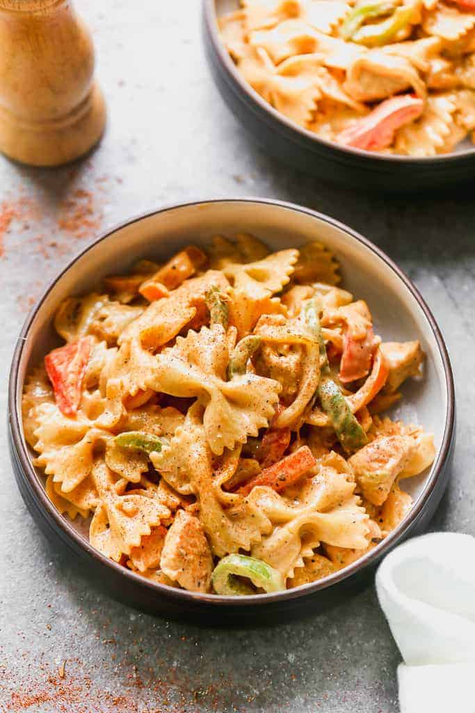

Cajun Chicken Pasta

Description
This Cajun Chicken Pasta is a dinner winner with it’s creamy cajun sauce and bites of tender pasta and chicken. It’s one of the easiest dinners, ready in less than 30 minutes.
There’s few things I love more than 30-minute meals! This cajun pasta is quick, easy, and completely customizable! Serve it with Homemade Breadsticks, Rolls, a Salad, or a side of Roasted Vegetables.
Ingredients
- 8 ounces farfalle pasta (or your favorite type)
- 2 Tablespoons butter
- 3 cloves garlic , minced
- ▢ 1 pound boneless skinless chicken breasts (about 2 breasts), cut into bite-size pieces
- 2 teaspoons Cajun seasoning , more or less, to taste
- 4 ounces cream cheese , softened and cut into small pieces
- 1 cup milk
- 3/4 cup freshly grated parmesan cheese
- 1/2 teaspoon freshly ground black pepper
- 1/2 teaspoon salt , more to taste, if needed
- Fresh vegetables, if desired
Steps
- Cook pasta according to package instructions until al dente. Drain, rinse with cold water and set aside.
- In a large pot or skillet, melt the butter over medium heat. Add the garlic and cook for 30 seconds.
- Add the chicken pieces (and any desired vegetables*) and season with cajun seasoning. Cook for 3-4 minutes, until chicken is nearly cooked through.
- Add the milk and cream cheese, stirring well until cream cheese has melted and sauce is smooth, 2-3 minutes.
- Stir in pasta, parmesan cheese, salt and pepper. Serve immediately.
Nutrition
- Calories: 661kcal
- Carbohydrates: 58g
- Protein: 46g
- Fat: 27g
- Saturated Fat: 14g
- Cholesterol: 141mg
- Sodium: 930mg
- Potassium: 1178mg
- Fiber: 5g
- Sugar: 8g
- Vitamin A: 1800IU
- Vitamin C: 137.6mg
- Calcium: 398mg
- Iron: 2.5mg